C Language
C is a general-purpose, procedural programming language developed by Dennis Ritchie in 1972 at Bell Labs. It is widely used for system programming, embedded systems, and application development because it is fast, efficient, and close to hardware. C provides low-level memory access, a rich set of operators, and structured programming features, making it a foundation for many modern languages like C++, Java, and Python.
- Foundation of programming: C helps you understand core concepts like memory management, pointers, and data structures.
- performance:Programs written in C run very fast and use less memory.
- System-level programming: Used to develop operating systems, compilers, and device drivers.
- Embedded systems:Widely used in microcontrollers and hardware-related applications.
- Portable language: C programs can run on different platforms with minimal changes.
- Base for other languages: Many modern languages (C++, Java, Python) are built on concepts from C.
Syntax
What is Syntax in C :
Syntax means the rules for writing a C program.
If syntax rules are wrong → program gives errors, just like grammar in English.
There are two types of Comment in C:
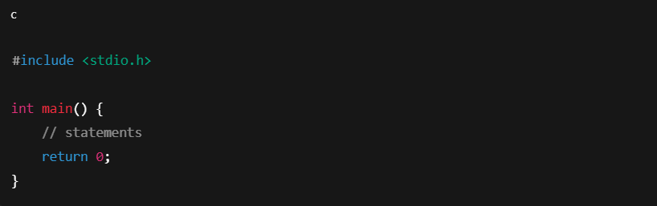
- Single Line Comment
- Used for short explanations. 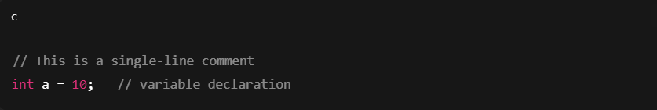
- Multi-line (Block) Comment
- Used for long explanations or documentation. 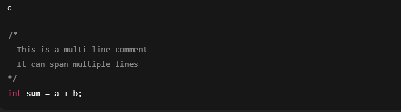
C Output (Print Text)
In C language, text or output is printed on the screen using the printf() function.
- Defined in stdio.h
- Used to display text, numbers, and variables
printf() Function
Example
printf("text");
Double Quotes
In C language, double quotes (" ") are used to represent strings (a group of characters).
If you forget the double quotes, an error occurs:
Example
printf("This sentence will work!");
printf(This sentence will produce an error.);
C Variables
A variable in C is a named memory location used to store data that can change during program execution.
Syntax :
data_type variable_name;
Example :
// Declare a variable
int myNum;
// Assign a value to the variable
myNum = 15;
C Variable Names
In C language, variable names are also called identifiers.
They are used to identify variables, functions, arrays, etc.
✅ Allowed
- Must start with a letter (a–z, A–Z) or underscore (_)
- Can contain letters, digits, and underscores
- Case-sensitive (total and Total are different)
- Length is usually up to 31 characters (compiler-dependent)
❌ Not Allowed
- Cannot start with a number
- Cannot contain spaces
- Cannot use special characters like @, #, $, %
- Cannot be a C keyword
📌 Invalid Variable Names
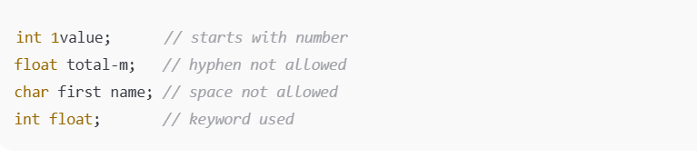Data Types
Data types in C define the type of data a variable can store, the amount of memory allocated to it, and the operations that can be performed on it.
📌 Simple Definition (Easy Words) :
A data type tells the compiler what kind of value a variable will hold
(e.g., number, decimal, character).
Basic Data Types
The data type specifies the size and type of information the variable will store.
| Sr.No | Data Type | Description | Example |
|---|---|---|---|
| 1 | int | Stores whole numbers (positive or negative). Used for counting, age, quantity, etc. | int age = 25; |
| 2 | float | Stores decimal (fractional) numbers with single precision. | float price = 45.75; |
| 3 | double | Stores decimal numbers with double precision (more accurate than float). | double distance = 12345.6789; |
| 4 | char | Stores a single character using ASCII value. | char grade = 'A'; |
| 5 | void | Represents no value. Used for functions that return nothing. | void display(); |
Example Program
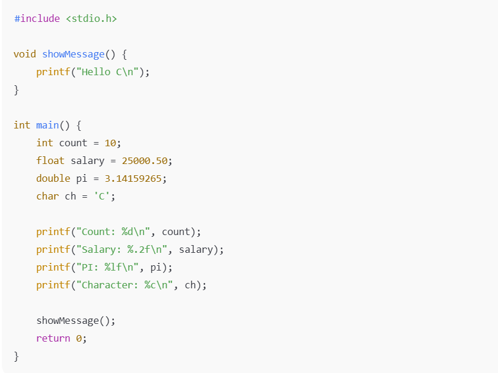C Type Conversion (Type Casting) — In Detail
Type conversion in C is the process of converting one data type into another.
It is used when operations involve different data types.
There are two types of conversion in C:
- Implicit Conversion (automatically)
- Explicit Conversion (manually)
Implicit Conversion (automatically)
- Done automatically by the compiler
- Converts lower data type → higher data type
- No data loss (generally)
.png)
Explicit Type Conversion (Type Casting)
- Done manually by the programmer
- May cause data loss
(type) expression

C Constants
- In C language, a constant is a fixed value that cannot be changed during program execution.
- Definition: Constants are values whose value remains the same throughout the program.
This can be done with the const keyword, which makes a variable unchangeable and read-only: 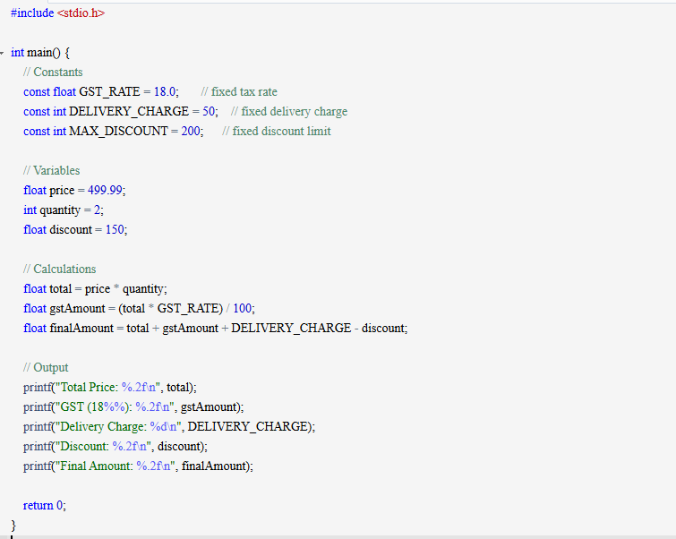
Operator
In C language, operators are special symbols used to perform operations on variables and values.
📌 Definition
👉 Operators in C are symbols that perform mathematical, logical, relational, or assignment operations on operands.
📌 Types of Operators in C
- Arithmetic Operators
- Relational Operators
- Logical Operators
- Assignment Operators Used to assign values.
- Increment & Decrement Operators Increase or decrease value by 1.
- Bitwise Operators Operate on binary bits.
- Conditional (Ternary) Operator
- Special Operators
- sizeof
- Address-of operator (&)
- Pointer operator (*)
- Structure member operator (.)
- Structure pointer operator (->)
- Comma operator (,)
Used for mathematical calculations.
| Operator | Meaning | Example |
|---|---|---|
| + | Addition | a + b; |
| - | Subtraction | a - b |
| * | Multiplication | a * b |
| / | Division | a / b |
| % | Modulus (remainder) | a % b |
Example :

Used to compare values (result is true/false).
| Operator | Meaning |
|---|---|
| == | Equal to |
| != | Not equal |
| > | Greater than |
| < | Less than |
| >= | Greater than or equal |
| <= | Less than or equal |
Example :

Used to combine conditions.
| Operator | Meaning |
|---|---|
&& |
Logical AND |
! |
Logical NOT |

| Operator | Example | Meaning |
|---|---|---|
| = | a = 10 | Assign |
| += | a+=5 | a = a + 5 |
| -= | a -= 5 | a -= 5 |
| *= | a*=2 | a = a * 2 |
| /= | a /= 2 | a = a / 2 |
| Operator | Meaning |
|---|---|
| ++ | Increment |
| -- | Decrement |

| Operator | Meaning |
|---|---|
| & | Bitwise AND |
| ^ | XOR |
| 3 | John |
| << | Left shift |
| >> | Right shift |
The conditional (ternary) operator in C provides a concise way to write simple if-else logic using three operands.
Syntax :
It follows the form condition ? expression1 : expression2. The condition evaluates to true (non-zero) or false (zero); if true, expression1 executes, otherwise expression2 executes.

C Booleans
Definition :
Boolean is a logical data concept used in C to represent two possible values: true or false.
In C language, Boolean values are mainly used for decision making, conditions, and loop control.
Using int (Traditional Method)
0 → false
1 (or any non-zero value) → true
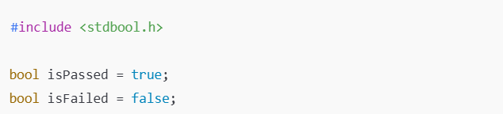
Conditions and If Statements
Condition
A condition is a logical expression that evaluates to either true (1) or false (0).
Conditions are mainly used for decision making in C programs.
The if Statement
The if statement is a conditional control statement used to execute a block of code only when a condition is true.
Syntax
if (condition) {
// code executes if condition is true
}

Else If
Else :
Use the else if statement to specify a new condition if the first condition is false.
Else-If
The if–else statement in C is a decision-making statement used to execute one block of code if a condition is true, and another block if the condition is false.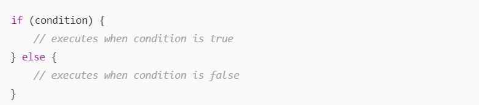
Example :
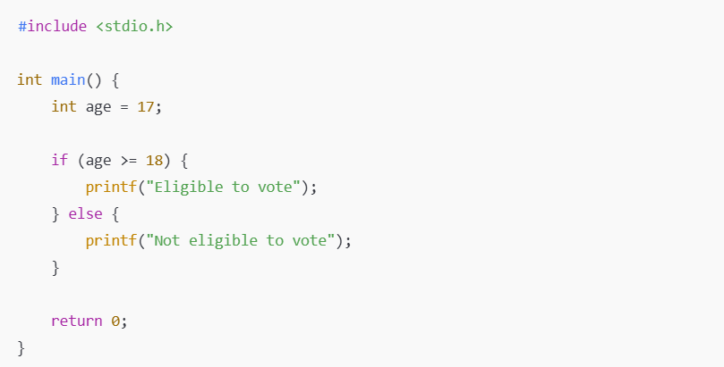
Short Hand If...Else (Ternary Operator)
The ternary operator is a short-hand form of the if–else statement used to make decisions in a single line.
USE THIS THOSE OPERATOR -> ?, :
Syntax :
condition ? expression1 : expression2;
- explanations of syntax
- If condition is true → expression1 executes
- If condition is false → expression2 executes
Nested if Statement in C
A nested if statement is an if statement inside another if statement.
It is used when one condition depends on another condition.
Syntax :

Example :

C Logical Operators in Conditions
Logical operators in C are used to combine, compare, or negate conditions.
They are mostly used inside if, if–else, loops, and ternary operators.
📌 Definition
👉 Logical operators evaluate expressions and return a Boolean result (true or false).

Switch in C
Switch :
The switch statement in C is a multi-way decision control statement.
It allows a variable or expression to be tested against multiple constant values and executes the matching case.
Why need Switch :
- Cleaner than multiple if–else if
- Easier to read and maintain
- Faster execution in many cases (compiler optimization)
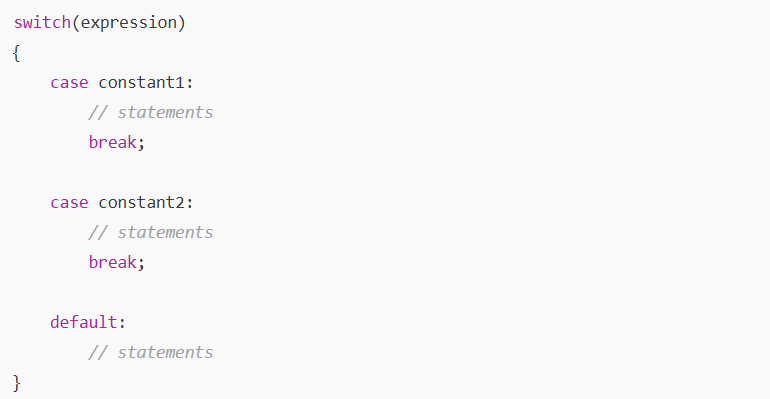
How it works :
- expression is evaluated once
- Its value is compared with each case
- Matching case block executes
- break stops execution and exits switch
- If no match → default runs
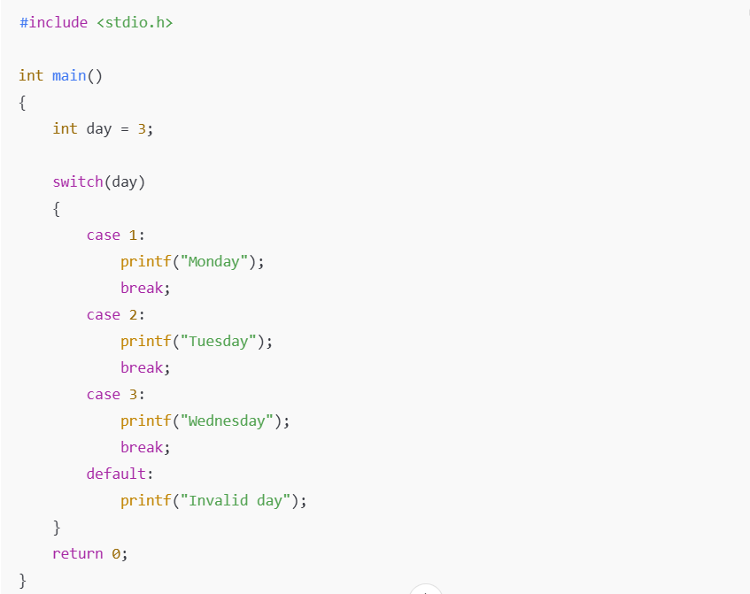